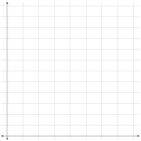
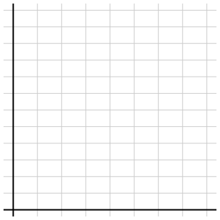

Section Section 1.1: Linear Models
A model describes a relationship between variables. This relationship can be represented in a variety of ways:
- with a table of values
- with a graph
- with an equation
Ex: A taxi out of Dulles Airport in Washington, DC, charges a traveler an initial fee of $2.00, plus $1.50 for each mile traveled.
-
Complete the table of values showing the charge, \(C\text{,}\) for a trip of \(n\) miles.
\(n\) 0 5 10 15 20 25 \(C\) - Graph the relationship.


- Write an equation for the charge, \(C\text{,}\) in terms of the number of miles traveled, \(n\text{.}\)
- What is the charge for a trip to Mount Vernon, 35 miles from the airport? Illustrate the answer on your graph.
- If a ride to the National Institutes of Health (NIH) costs $42.50, how far is it from the airport to the NIH? Illustrate the answer on your graph.
The of a graph are the points where the graph crosses the axes.
- The is the point \((0,y)\) found by setting and solving for y.
- The is the point \((x,0)\) found by setting and solving for x.
Ex: Find the intercepts of the graph in the airport example above. What do these intercepts represent?
Graphing a Line Using the “Intercept Method”:
- Find the \(x\)- and \(y\)-intercepts.
- Plot the intercepts.
- Choose a value of \(x\) and find a third point on the line to make it a bit easier to make the line straight.
- Draw a line through the points.
In the airport example, the model was of the form
Models of this form are called .
Linear equations can also be written in what is sometimes called general form:
Ex: Five pounds of body fat is equivalent to 16,000 calories. Carol can burn 600 calories per hour bicycling and 400 calories per hour swimming.
- Write an equation in general form that relates the number of hours, \(x\text{,}\) of cycling and the number of hours, \(y\text{,}\) of swimming Carol needs to perform to burn 16,000 calories.
-
Find the intercepts and use them to sketch the graph of the linear equation.
- What do the intercepts tell us about Carol’s exercise program?
- Is the graph you drew in part (2) increasing or decreasing?
Ex: Frank plants a dozen corn seedlings, each 6 inches tall. With plenty of water and sunlight they will grow approximately 2 inches per day.
-
Complete the table of values for the height, \(h\text{,}\) of the seedlings after \(t\) days.
\(t\) 0 5 10 15 20 25 \(h\) - Write an equation for the height of the seedlings in terms of the number of days since they were planted.
- Find the intercepts of the graph.
- Graph the equation.
- What do the intercepts tell us about the problem?